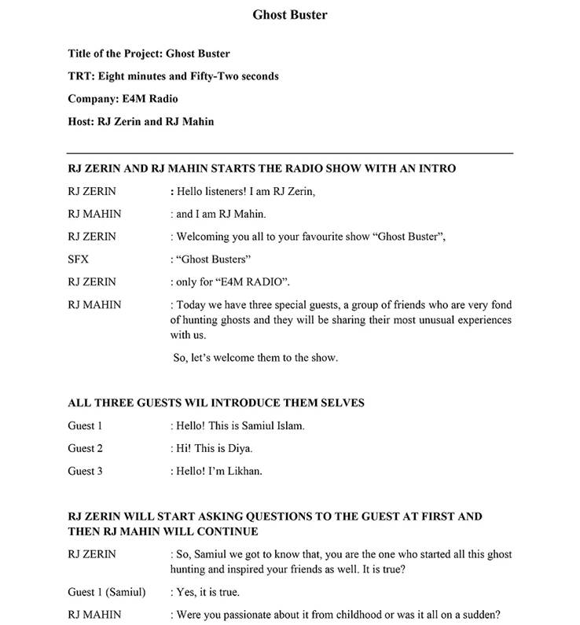
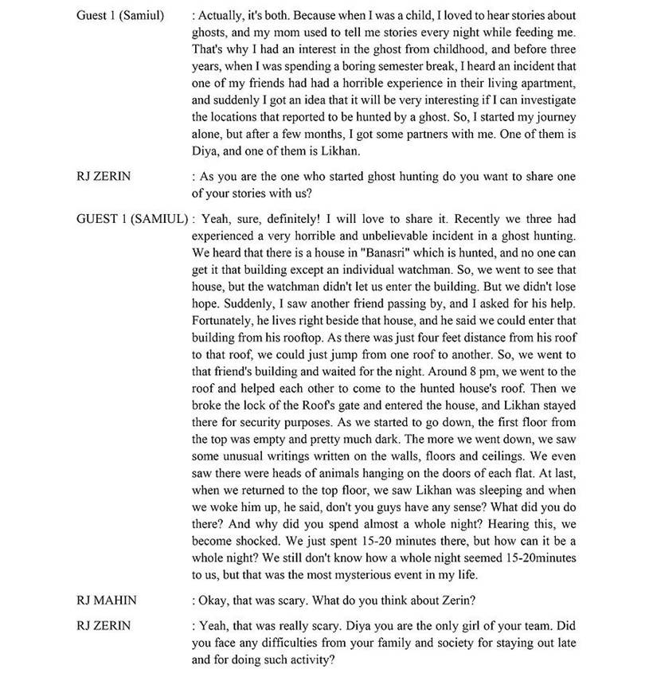
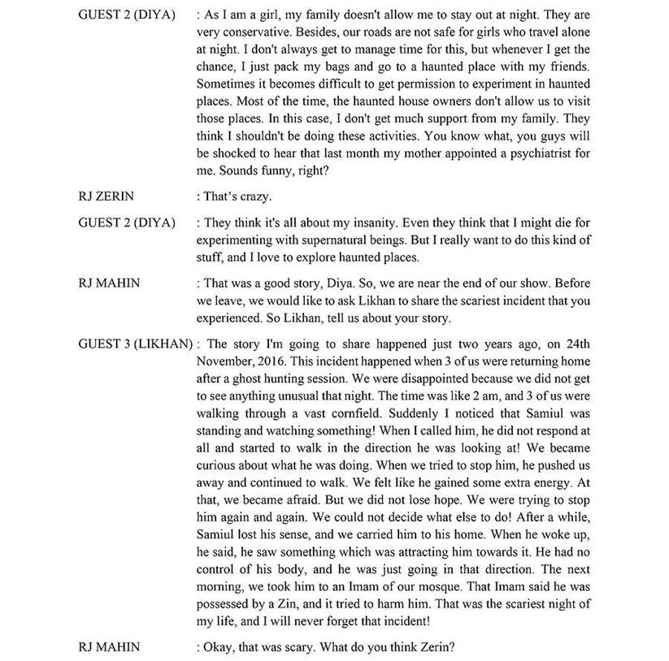
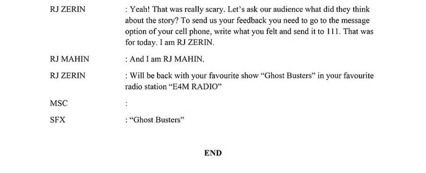

Project information
Project 5
Course Code and Name: MSJ11201 English for media
Project Name: Radio Project
Project Title: Ghost Buster
Date of Project: Spring 2019
Project Description:
As a part of the course task for English for Media, we were obliged to develop a script and record a Radio Project. We formed a group to complete this task and to make it an interesting project. We decided to write a horror script. I took the responsibility of generating ideas for the project, and Zerin helped me with writing the script according to our plan. Mahian and Zerin played the part of the RJs. On the other hand, I, Likhan, and Diya played the part of the guests. Everyone recorded the audio by themselves and gave it to me to compile them into the final audio file. All of us were present in the ULAB Radio Campbuzz room (Campus B) while we recorded the audio.
Project
Justification:
I am always curious about the horror stories and
events, and whenever I got the chance, I try to explore things which is related
to ghosts. So, we decided to make a project based on a horror story. In horror
fictional productions, it is required to give more time during in the
pre-productions. Each and every movement, every sound effects and ambiences
require a lot of planning to bring the actual horror feelings. In addition, if
the narration of a horror story is not up to the mark, the audience will lose
interest. So, when we decided to make our own radio show, we jumped into making
a horror one.

●



Show Link: https://www.youtube.com/watch?v=CqN8iD2HBus
Learnings and outcomes:
● Through this project I have learned how to develop a story in English.
● I improved my English presentation and communication skills.
● I've also learned how to plan and execute a radio show.
● It was a group project, and taking the lead helped me improve my leadership abilities.
● I also learn how to edit audio and mix sound effect accordingly.
● I improve my vocabulary while writing the script.